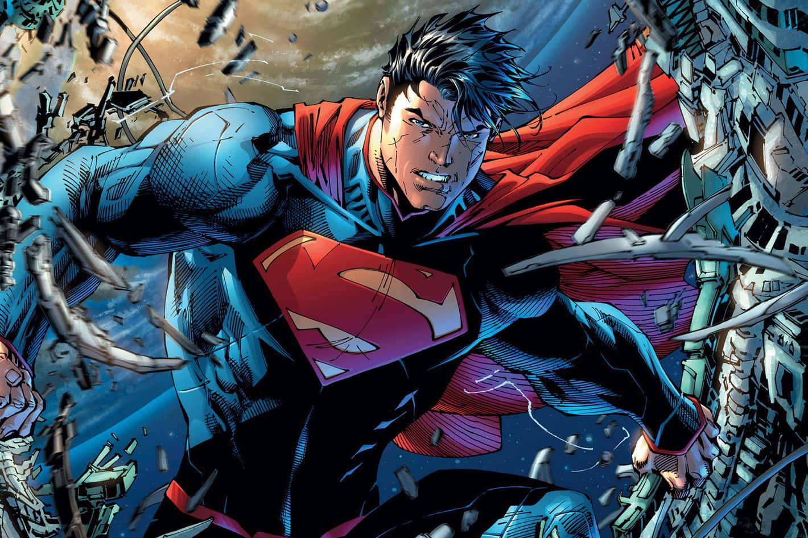
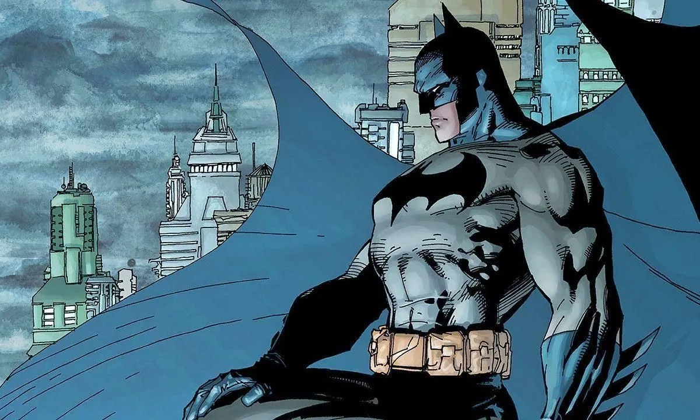
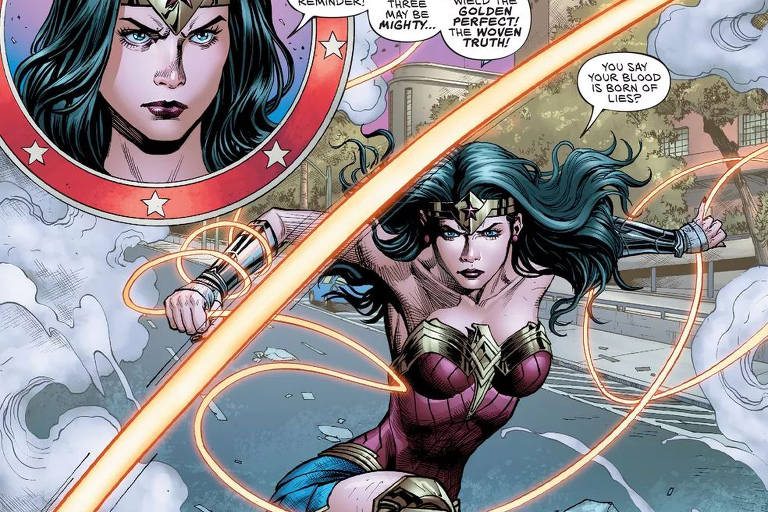

Batman foi criado em 1939 por Bob Kane e Bill Finger. Atualmente, é um dos super-heróis mais populares da DC Comics, pois, mesmo sem possuir superpoderes, demonstra uma inteligência, coragem e determinação impressionantes no combate ao crime.

A Mulher-Maravilha é uma personagem que representa a força feminina, foi criada por Wilian Moulton Marston em 41. Ela é uma princesa amazona e possui habilidades de combate e ataque excepcionais, além de ser imortal e ter um laço da verdade que obriga as pessoas a dizerem a verdade quando estão presas nele.